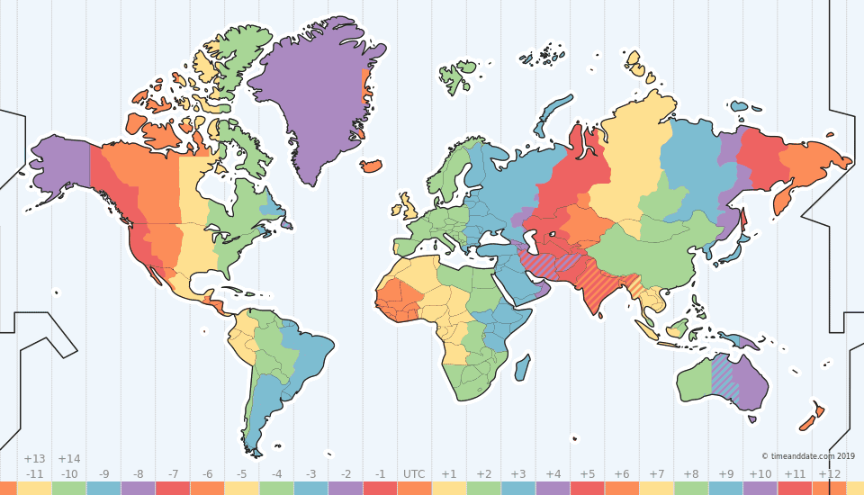

Chapter 12 [Tutorial] Tijdsdata
12.1 Voor we beginnen
Gefeliciteerd met het bereiken van de laatste tutorial van deze cursus. In deze tutorial gaan we spelen met datums en tijdstippen. Om dit op een gemakkelijke manier te doen, zullen we het pakket lubridate gebruiken, dat je misschien moet installeren. We zullen ook dplyr laden voor wanneer we tijd zullen gebruiken in een data.frame context. We hebben geen dataset nodig, we zullen alle data zelf maken (Hoe cool is dat?).
12.2 Introduction
In de huidige tijden zijn tijdsgegevens zeer belangrijk, en het is dus van cruciaal belang dat je weet hoe ermee moet werken. Als je erover nadenkt, zijn er zo veel soorten gegevens die een tijdscomponent hebben. Kijk maar naar de verschillende datasets die we hebben gebruikt.
- ordergegevens (elke order wordt op een bepaald moment aangemaakt, verpakt, verzonden enz.)
- terrorismegegevens (elke terroristische aanslag vond op een bepaald tijdstip plaats, helaas)
- gapminder-gegevens (we hadden informatie over verschillende jaren)
- nydeaths (sterfgevallen gebeuren op een specifiek moment)
- vluchten vertrekken en komen aan op een specifiek tijdstip (en hebben soms vertraging)
- concerten (concerten vinden plaats op een specifiek moment, kaartjes worden gekocht op een specifiek moment)
Tijd is overal!
In essentie gedragen tijd en datums zich als een continue variabele. Je kunt twee datums vergelijken en zien welke datum later was. Je kunt het tijdsverschil tussen twee datums berekenen. De meeste dingen die werken voor getallen zullen op een bepaalde manier ook werken voor tijden of datums.
Goed, continue gegevens. Dus waar is al die ophef over?
Wel, tijd is een beetje complexer. Om te beginnen heeft het verschillende componenten. Laten we beginnen met het bekijken van enkele datums.
12.3 What’s in a date?
Makkelijke vraag: dagen, maand, en jaar.
Het lastige is natuurlijk de volgorde. Sommigen schrijven eerst het jaar, anderen de dag. Sommigen zullen 1998 schrijven, anderen 98. Er is echt geen volgorde te bedenken die je niet kunt gebruiken. En dan zijn er nog verschillende scheidingstekens zoals spaties, -, ., /. Laten we eens kijken naar deze volkomen willekeurige datum, die we in verschillende formaten hebben genoteerd.
- 1991-06-28
- 28 06 1991
- 28 June 91
- June 28, 1991
- 280691
- 1991/06/28
De mogelijkheden zijn eindeloos. Echter, dankzij lubridate, hoeven we niet veel moeite te doen. We hoeven alleen maar de volgorde van de componenten Dag, Maand en Jaar te kennen.
Beschouw de volgende code. We maken een character vectpr dat de bovenstaande datum bevat.
Laten we zeggen dat ik het verschil wil weten tussen die dag en vandaag. Het volgende zal natuurlijk niet werken.
## "2021-03-21" - "1991-06-28"Ik weet niet hoe het met jou zit, maar ik heb geleerd dat we geen twee woorden van elkaar kunnen aftrekken. En als we de "’s weghalen?
## [1] -39Tenzij we in de tijd kunnen reizen, gebeurde 28-06-1991, bijna 28 jaar voor 29-04-2019, niet 39 jaar de andere kant op. Het verschil is ook geen 39 dagen of 39 maanden. Ik neem aan dat je ziet wat hier aan de hand is.
Wat we nodig hebben is een nieuw type object. Geen karakter, geen numeriek, geen geheel getal, geen factor. We hebben een datum nodig!
We kunnen een datum maken met de toepasselijk genaamde ‘make_date’ functie in lubridate, waar we jaar, maand en datum als argument kunnen geven.
## [1] "1991-06-28"Het printen doet niet echt iets speciaal vergeleken met een character. Laten we eens kijken naar de klasse.47
## [1] "Date"Dat lijkt in orde.
Laten we een reeks datums maken - laten we zeggen elke dag in april. Herinner je je de code onderaan nog? We zagen het om data.frames te maken een lange tijd geleden. We gebruiken as_tibble om het data.frame te transformeren naar het makkelijker te printen tibble formaat.
## # A tibble: 30 x 3
## year month day
## <dbl> <dbl> <int>
## 1 2019 4 1
## 2 2019 4 2
## 3 2019 4 3
## 4 2019 4 4
## 5 2019 4 5
## 6 2019 4 6
## 7 2019 4 7
## 8 2019 4 8
## 9 2019 4 9
## 10 2019 4 10
## # ... with 20 more rowsMet mutate kunnen we nu de datum toevoegen als een aparte variabele.
## # A tibble: 30 x 4
## year month day date
## <dbl> <dbl> <int> <date>
## 1 2019 4 1 2019-04-01
## 2 2019 4 2 2019-04-02
## 3 2019 4 3 2019-04-03
## 4 2019 4 4 2019-04-04
## 5 2019 4 5 2019-04-05
## 6 2019 4 6 2019-04-06
## 7 2019 4 7 2019-04-07
## 8 2019 4 8 2019-04-08
## 9 2019 4 9 2019-04-09
## 10 2019 4 10 2019-04-10
## # ... with 20 more rowsKijk nog eens naar het type van deze variabele. Het heet een Datum.
## Rows: 30
## Columns: 4
## $ year <dbl> 2019, 2019, 2019, 2019, 2019, 2019, 2019, 2019, 2019, 2019, 2...
## $ month <dbl> 4, 4, 4, 4, 4, 4, 4, 4, 4, 4, 4, 4, 4, 4, 4, 4, 4, 4, 4, 4, 4...
## $ day <int> 1, 2, 3, 4, 5, 6, 7, 8, 9, 10, 11, 12, 13, 14, 15, 16, 17, 18...
## $ date <date> 2019-04-01, 2019-04-02, 2019-04-03, 2019-04-04, 2019-04-05, ...Dit lost natuurlijk slechts een deel van het probleem op. Hoe gaan we van iets als “28-06-1991” naar 28 en 6 en 1991, en dan naar een datum? Stel dat we een tabel met datums hebben waar elke datum is opgeslagen als een karakter, zoals hieronder.48
## # A tibble: 30 x 1
## date
## <chr>
## 1 2019-4-1
## 2 2019-4-2
## 3 2019-4-3
## 4 2019-4-4
## 5 2019-4-5
## 6 2019-4-6
## 7 2019-4-7
## 8 2019-4-8
## 9 2019-4-9
## 10 2019-4-10
## # ... with 20 more rowsKijk goed, deze datum kolom is geen “datum”, het is een character.
## Rows: 30
## Columns: 1
## $ date <chr> "2019-4-1", "2019-4-2", "2019-4-3", "2019-4-4", "2019-4-5", "2...Met behulp van separate zouden we deze tekens echter kunnen scheiden, en dan make_date toepassen.
library(tidyr)
dates_of_april_text %>%
separate(date, into = c("year","month","day")) %>%
mutate(date = make_date(year, month, day))## # A tibble: 30 x 4
## year month day date
## <chr> <chr> <chr> <date>
## 1 2019 4 1 2019-04-01
## 2 2019 4 2 2019-04-02
## 3 2019 4 3 2019-04-03
## 4 2019 4 4 2019-04-04
## 5 2019 4 5 2019-04-05
## 6 2019 4 6 2019-04-06
## 7 2019 4 7 2019-04-07
## 8 2019 4 8 2019-04-08
## 9 2019 4 9 2019-04-09
## 10 2019 4 10 2019-04-10
## # ... with 20 more rowsDat is natuurlijk veel werk, wat we niet leuk vinden. We kunnen echter lubridate gebruiken. Het kan niet alleen data maken van zijn componenten, het kan deze componenten ook detecteren in een character!We hoeven het alleen de volgorde van de componenten te vertellen.
Aangezien het jaar eerst wordt opgeschreven, dan de maand, dan de dag, is de volgorde van de componenten ymd. Wel, er is een functie in lubridate met die naam. Laten we het proberen met onze eerdere datum.
## [1] "1991-06-28"Laten we een tweede datum maken voor vandaag.49
## date2 <- ymd("2021-03-21")## [1] "2021-03-21"## [1] "Date"Er is eigenlijk een heel handige functie in lubridate om de datum van vandaag te krijgen. Het is gewoon om today()
## [1] "2021-03-21"Als de datumcomponenten in een andere volgorde staan, hoef je alleen maar de volgorde van de letters y, m en d te veranderen. De volgende functies worden allemaal geleverd door lubridate.
- dmy
- dym
- mdy
- myd
- ymd
- ydm
Hier zijn enkele voorbeelden.
## [1] "2017-03-25"## [1] "2017-03-25"## [1] "2017-03-25"## [1] "2017-03-25"## [1] "2017-03-25"## [1] "2017-03-25"Merk op dat lubridate automatisch de componenten zal vinden zolang het weet in welke volgorde het moet zoeken - je hoeft je geen zorgen te maken over hoe het is gescheiden, of maand en dagen zijn geschreven met of zonder een nul (dus 1/4/2019 of 01/04/2019), of dat jaren zijn geschreven met 2 of 4 getallen. Lubridate is zelfs zo slim dat het zal proberen de juiste eeuw te raden. Stel we definiëren de datum die we eerder zagen, 28 juni 1991, maar geven lubridate alleen jaar 91.
## [1] "1991-06-28"Het wordt 91 in 1991. Maar als we het jaar 19 geven (d.w.z. op dezelfde dag in 2019), wordt het 19 in 2019.
## [1] "2019-06-28"Dit is natuurlijk erg handig (tenzij we het jaar 1919 zoeken). Echter, na de Y2K bug, zullen we meestal yyyy-datums vinden.50
Dus, laten we teruggaan naar onze tabel.
## # A tibble: 30 x 1
## date
## <chr>
## 1 2019-4-1
## 2 2019-4-2
## 3 2019-4-3
## 4 2019-4-4
## 5 2019-4-5
## 6 2019-4-6
## 7 2019-4-7
## 8 2019-4-8
## 9 2019-4-9
## 10 2019-4-10
## # ... with 20 more rowsGelukkig werkt ymd met vectoren, en ook met singuliere data. Dus, in plaats van dit
dates_of_april_text %>%
separate(date, into = c("year","month","day")) %>%
mutate(date = make_date(year, month, day))kunnen we nu gewoon dit doen
## # A tibble: 30 x 1
## date
## <date>
## 1 2019-04-01
## 2 2019-04-02
## 3 2019-04-03
## 4 2019-04-04
## 5 2019-04-05
## 6 2019-04-06
## 7 2019-04-07
## 8 2019-04-08
## 9 2019-04-09
## 10 2019-04-10
## # ... with 20 more rowswat natuurlijk een stuk makkelijker is.
Natuurlijk zijn er altijd momenten dat lubridate fouten kan maken. Denk aan de grappige eerste dag van april. In sommige delen van de wereld schrijven ze datums in een maand-dag-jaar volgorde, vooral in de Verenigde Staten.
Zo wordt de eerste dag van april geschreven als 04-01-2019. Als we deze dag zonder enige context zouden zien, zouden we ten onrechte denken dat 4 de dag is, 1 de maand en 2019 het jaar. Aldus,
## [1] "2019-01-04"Lubridate zal geen problemen ondervinden omdat dit geen onjuiste datum is. Maar, we hebben het niet meer over de eerste april. We hebben het over 4 januari. De tweede april wordt 4 februari met deze code. Lubridate zal merken dat er iets fout gaat als we bij de 13e april komen.
## [1] NANu zal lubridate dit niet zien als een correcte dmy-date, en een NA teruggeven. Het is echter goed om te weten dat lubridate niet erg goed leert van zijn fouten. Stel dat we weer een hele dataset hebben met datums in dit formaat.51
## # A tibble: 30 x 1
## date
## <chr>
## 1 4-1-2019
## 2 4-2-2019
## 3 4-3-2019
## 4 4-4-2019
## 5 4-5-2019
## 6 4-6-2019
## 7 4-7-2019
## 8 4-8-2019
## 9 4-9-2019
## 10 4-10-2019
## # ... with 20 more rowsAls we proberen is om te zetten in een datum met behulp van de verkeerde volgorde, dmy. Krijgen we het volgende.
## # A tibble: 30 x 1
## date
## <date>
## 1 2019-01-04
## 2 2019-02-04
## 3 2019-03-04
## 4 2019-04-04
## 5 2019-05-04
## 6 2019-06-04
## 7 2019-07-04
## 8 2019-08-04
## 9 2019-09-04
## 10 2019-10-04
## 11 2019-11-04
## 12 2019-12-04
## 13 NA
## 14 NA
## 15 NA
## 16 NA
## 17 NA
## 18 NA
## 19 NA
## 20 NA
## 21 NA
## 22 NA
## 23 NA
## 24 NA
## 25 NA
## 26 NA
## 27 NA
## 28 NA
## 29 NA
## 30 NAMerk op dat alle data tot de 13e (foutief) zijn geconverteerd. De overige zijn niet geconverteerd en vervangen door NA, waarvoor lubridate ons waarschuwt. Hij is echter niet zo slim om onze fout te herstellen en ook de eerste 12 dagen te vervangen door NA.
Laten we teruggaan naar de datums die we eerder hebben gedefinieerd.
## [1] "1991-06-28"## [1] "2021-03-21"We kunnen nu met deze data rekenen.
## Time difference of 10859 daysProbleem opgelost. Laten we wat nieuwe problemen toevoegen.
12.4 There’s always time
In plaats van datums kunnen we ook tijden hebben. In deze tutorial zullen we alleen de combinatie van datum en tijd bekijken, die we een datetime noemen (We gaan het niet hebben over tijdstip op zichzelf, wat weer een heel ander verhaal is). We kunnen een voorbeeld bekijken met de functie nu. Terwijl today ons de datum van vandaag geeft, geeft now ons de datumtijd van nu.
## [1] "2021-03-21 20:51:33 CET"## [1] "POSIXct" "POSIXt"De klasse van een datetime is niet langer een “date”, het is een “POSIXct” en “POSIXt”.52
Net als bij datums kunnen we datetimes op twee manieren maken.
- Door make_datetime te gebruiken, en alle componenten (dag, maand, jaar, uren, minuten, seconden en tijdzone) mee te geven.
- Met ymd_hms, en een karakter vector van tijdstippen.
Naast ymd_hms is er ook dmy_hms, mdy_hms, enz. Echter, uren, minuten en seconden moeten altijd in dezelfde volgorde staan. Er is geen ymd_smh bijvoorbeeld. Maar, we zullen ook nooit een datetime in dat formaat vinden, dus geen zorgen. Er is wel een ymd_hm en een ymd_h (en dus ook voor alle ymd-orders), die we kunnen gebruiken als we alleen het uur hebben, of het uur en de minuten, maar niet de meer gedetailleerde delen.
Je zult meestal ymd_hms gebruiken. Laten we enkele voorbeelden bekijken. Merk op dat de derde notatie, met een T tussen het datum- en tijddeel, heel gebruikelijk is in datasets, en lubridate zorgt daar zonder problemen voor.
## [1] "2017-03-25 10:30:00 UTC"## [1] "2017-03-25 10:30:00 UTC"## [1] "2017-03-25 10:30:00 UTC"## [1] "2017-03-25 10:30:00 UTC"## [1] "2017-03-25 10:30:00 UTC"## [1] "2017-03-25 10:30:00 UTC"Nogmaals, je kunt dit gebruiken op volledige kolommen met behulp van mutate. Zorg er ook voor dat je controleert wat de werkelijke volgorde van componenten is. We zagen al dat lubridate ook fouten kan maken.
Als we eenmaal datetimes hebben, kunnen we er weer berekeningen mee doen.
## Time difference of 1457.39 daysOf ze vergelijken.
## [1] FALSEWe zullen nog veel meer leren wat we met data kunnen doen, maar er is eerst nog een horde te nemen.
12.5 My time is not your time
Dus, het hanteren van tijd is niet veel moeilijker dan het hanteren van datums. Voeg gewoon een paar extra letters toe aan de ymd functies. Dit is vooral waar als je op dezelfde plaats blijft. Zodra je je naar verschillende landen begeeft, wordt tijd moeilijker. Even het Noordzee kanaal oversteken en we moeten onze klokken verzetten.
Hieronder ziet u een kaart met alle verschillende tijdzones.

Wanneer je afstudeert zullen jullie zeker succesvolle internationale zakenleiders worden, dus een basiskennis van tijdzones is noodzakelijk. Laten we nog eens kijken naar de huidige tijd.
## [1] "2021-03-21 20:51:33 CET"Het laatste deel van deze tijd vertelt ons in welke tijdzone we ons bevinden. Op mijn pc staat er momenteel CET, dat is de Centraal Europese Wintertijd.53 Je kunt ook controleren in welke tijdzone je zit met Sys.timezone().
## [1] "Europe/Paris"Op dit moment zegt mijn pc me dat het Europa/Parijs is in plaats van CET. Inderdaad, er zijn meerdere namen voor dezelfde zone. Het is allemaal deel van een groot masterplan om je in de war te brengen.
De functie olson_time_zones geeft je een lijst van alle tijdzones volgens de Olson tijd database. Dit is notatie van tijdzones met behulp van continent/stad. Het is genoemd naar Arthur David Olson.
Probeer dit maar eens in je console. De lijst is iets te lang om hier te tonen.
Wanneer we een datum creëren met een ymd_hms-variant, zal deze automatisch UTC gebruiken als tijdzone.
## [1] "2017-03-25 10:30:00 UTC"UTC is de Universele Gecoördineerde Tijd, d.w.z. de standaard, basislijn tijdzone. CET is UTC + 1, d.w.z. één uur voor op UTC. We kunnen dat veranderen door het tz argument in te stellen in de ymd_hms functie. Laten we eerst een meer betekenisvolle datetime nemen.
## [1] "2017-01-20 17:30:00 UTC"Op het moment gebeurde er een trieste gebeurtenis in Washington DC. Dus laten we de tijdzone op de juiste manier definiëren.
## [1] "2017-01-20 11:30:00 EST"Merk op dat EST de Eastern Standard tijd is, de tijdzone die in de winter in DC wordt gebruikt. U kunt zien dat de tijd niet echt verandert, alleen de aanduiding van de tijdzone.
We kunnen nu zien hoe laat het was in België, door deze tijd in CET (Centraal Europese Tijd, onze wintertijd dus) weer te geven.
Eerst slaan we de tijd op als “doomsday”
Met behulp van with_tz kunnen we een punt in de tijd in een andere tijdzone laten zien.
## [1] "2017-01-20 17:30:00 CET"Dus, om 11u30 in Washington, was het 17u30 hier in België toen we de angstaanjagende gebeurtenissen live op onze tv-schermen zagen gebeuren.
Maar, beide verwijzen naar hetzelfde punt in de tijd. Het zijn gewoon verschillende voorstellingen van datzelfde punt.
## Time difference of 0 secsAls we echt de tijdzone willen veranderen, bv. verwijzen naar 11.30 in België, kunnen we in plaats daarvan force_tz gebruiken.
## [1] "2017-01-20 11:30:00 CET"Op dit punt hebben we het niet meer over hetzelfde tijdstip, maar over het tijdstip 6 uur voor doomsday.
## Time difference of -6 hoursWe komen zo terug op de tijdzones, want zelfs in België verzetten we onze klokken af en toe. Laten we eerst eens kijken naar de dingen die we kunnen doen met datums en tijden.
12.6 Extract information from dates
Wanneer we een datum (of datetime) hebben, kunnen we er gemakkelijk informatie uit halen. Bijvoorbeeld, neem doomsday.
We kunnen zien welke dag het was.
## [1] 20of op welk uur
## [1] 11of zelfs welke dag van de week
## [1] 6Het was de 6e dag van de week. Maar als je zich doomsday net zo goed herinnert als ik, staat toch op je oogleden geprint dat het een verschrikkelijke vrijdag was?
Inderdaad, lubridate begint te tellen op zondag - een andere Amerikaanse eigenaardigheid. Dus, zondag is de eerste dag van de week. Zaterdag de zevende. En vrijdag de zesde.
Gelukkig heeft de wday functie een argument label, dat we op TRUE kunnen zetten als we de exacte betekenis vergeten zijn.
## [1] Fri
## Levels: Sun < Mon < Tue < Wed < Thu < Fri < SatVrijdag was het. Niet dat het automatisch een geordende factor is, wat wel handig is. Merk ook op dat het misschien niet in het Engels is op uw pc. Tijd is voor ieder van ons een beetje anders, afhankelijk van je PC instellingen.
We kunnen ook de maand van doomsday vragen als een getal en een label.
## [1] 1## [1] Jan
## 12 Levels: Jan < Feb < Mar < Apr < May < Jun < Jul < Aug < Sep < ... < DecOf natuurlijk, de eerste maand van het jaar is januari. Zelfs in de VS. (Maar misschien niet in China, maar lubridate werkt enkel met de Gregoriaanse kalender).
Met behulp van deze functies kunnen we tijdgegevens vanuit zeer verschillende invalshoeken bekijken. We kunnen maanden, dagen van de week, uren, enz. vergelijken. Het laat zien hoe complex tijd is, maar ook op hoeveel verschillende manieren we het kunnen gebruiken om iets te analyseren. Daarom is het zo belangrijk om het te kennen.
12.7 Time differences
Er zijn drie verschillende manieren om een tijdsverschil uit te drukken.
- Period
- Duration
- Interval
Een periode wordt uitgedrukt in componenten: uren, dagen, maanden, jaren. Het is hoe we tijd waarnemen
Een duration wordt uitgedrukt in een aantal seconden. Het is zoals een machine of klok de tijd telt.
Een interval is een exact tijdsinterval, met een specifieke begindatum (tijd) en een specifieke einddatum (tijd). Het is iets totaal anders dan perioden en durations. Laten we die eerst bekijken.
12.7.1 Period
We kunnen een periode creëren met de period functie, door het een aantal componenten te geven.
## [1] "2d 0H 4M 70S"Merk op dat het ons gewoon de periode zal geven in gemakkelijk te begrijpen stukken tijd. 2 uur, 4 minuten en 70 seconden. Het zal het zelfs niet veranderen in 2 uur, 5 minuten en 10 seconden, want dat is niet wat we zeiden. Periodes hebben een menselijke kant.
Als onze tijd gemakkelijk kan worden uitgedrukt in een enkele component, kunnen we de componenten (in meervoud) gebruiken.
## [1] "3d 0H 0M 0S"## [1] "21d 0H 0M 0S"## [1] "2m 0d 0H 0M 0S"## [1] "4y 0m 0d 0H 0M 0S"We moeten het meervoud gebruiken (dagen, niet dag), want we hebben dag al gebruikt om de dag uit een datum te halen (weet je nog?). Wanneer we weken gebruiken, zal het elke week vertalen naar 7 dagen. Wanneer we maanden of jaren gebruiken, zal het extra componenten in zijn uitvoer creëren.
We kunnen deze functies ook bij elkaar optellen.
## [1] "1d 1H 0M 0S"We kunnen ook negatieve periodes maken.
## [1] "-10d 0H 0M 0S"Of vectoren (reeksen) van periodes
## [1] "1d 3H 0M 0S" "2d 4H 0M 0S" "3d 5H 0M 0S" "4d 6H 0M 0S" "5d 7H 0M 0S"## [1] "0S" "1d 0H 0M 0S" "2d 0H 0M 0S" "3d 0H 0M 0S" "4d 0H 0M 0S"
## [6] "5d 0H 0M 0S" "6d 0H 0M 0S"En we kunnen periodes optellen bij een datum. Dus als het vandaag
## [1] "2021-03-21"is, dan zijn dit de volgende 6 datums
## [1] "2021-03-22" "2021-03-23" "2021-03-24" "2021-03-25" "2021-03-26"
## [6] "2021-03-27"12.7.2 Durations
In plaats van deze voor mensen begrijpelijke componenten te gebruiken, vertalen durations alle tijdsverschillen naar seconden. Net als period, kunnen we duration gebruiken.
## [1] "173110s (~2 days)"Zoals u ziet, zal het altijd proberen een benadering te geven van de tijdsverschillen in begrijpelijke termen voor ons, mensen.
Inderdaad, we kunnen ook de wiskunde doen
## [1] 173110Op dezelfde manier kunnen we ddays, dweek, dyears, enz. gebruiken.54
## [1] "259200s (~3 days)"## [1] "1814400s (~3 weeks)"## [1] "126230400s (~4 years)"We kunnen ze opnieuw combineren.
## [1] "90000s (~1.04 days)"We kunnen negatieve durations maken.
## [1] "-864000s (~-1.43 weeks)"We kunnen opnieuw vectoren (reeksen) van durations maken.
## [1] "97200s (~1.12 days)" "187200s (~2.17 days)" "277200s (~3.21 days)"
## [4] "367200s (~4.25 days)" "457200s (~5.29 days)"## [1] "0s" "86400s (~1 days)" "172800s (~2 days)"
## [4] "259200s (~3 days)" "345600s (~4 days)" "432000s (~5 days)"
## [7] "518400s (~6 days)"En we kunnen rekenen met durations. Als het vandaag
## [1] "2021-03-21"is, zijn de volgende 6 dagen:
## [1] "2021-03-22" "2021-03-23" "2021-03-24" "2021-03-25" "2021-03-26"
## [6] "2021-03-27"Merk op dat we dmonths niet kunnen berekenen!
## [1] "2629800s (~4.35 weeks)"Er is geen vaste lengte voor maanden in aantal seconden, natuurlijk.55
Nu vraag je je af, waarom hebben we zowel perioden als durations? Wel, er zijn enkele belangrijke verschillen.
12.7.3 Periods are not durations
Zoals ik reeds heb gezegd, zijn durations door machines interpreteerbare seconden, en zijn perioden door mensen interpreteerbare periodes.
Als wij, mensen, zeggen “volgende maand” op 3 februari, bedoelen we 3 maart. Een machine zou niet weten wat een maand is.
Laten we een paar voorbeelden bekijken om het duidelijk te maken.
Laten we de eerste dag van 2019 nemen, wat geen schrikkeljaar is.
## [1] "2019-01-01"Als we een periode van een jaar toevoegen.
## [1] "2020-01-01"of een duration van een jaar
## [1] "2020-01-01 06:00:00 UTC"zijn beide hetzelfde, omdat de lengte van 2019 (d.w.z. 365 dagen), zoals wij die waarnemen, precies de duur van een jaar is.
Als we echter 2 jaar optellen, is er een verschil, want 2020 is een schrikkeljaar en hoe wij dat ervaren (366 dagen) is niet hetzelfde als de duur van een standaardjaar.
## [1] "2019-01-01"Als we een periode van 2 jaar toevoegen.
## [1] "2021-01-01"Als we een duration van 2 jaar toevoegen.
## [1] "2020-12-31 12:00:00 UTC"“Volgend jaar” op Nieuwjaar 2020 betekent voor ons mensen Nieuwjaar 2021, ook al is het een schrikkeljaar. Voor durations betekent het oudjaar, omdat wordt aangenomen dat een jaar 365 dagen heeft.
Laten we een ander voorbeeld nemen. Op 31 maart 2019 zijn we van onze wintertijd (CET) naar onze zomertijd (CEST) overgegaan. Wat betekent het om “een dag” toe te voegen aan 16 uur op zaterdag.
## [1] "2019-03-31 16:00:00 CEST"## [1] "2019-03-31 17:00:00 CEST"Als we een menselijke periode toevoegen, zal het zeggen 16 uur op zondag, ook al is dat slechts 23 uur later. Als we een duration toevoegen, zal het ons vertellen dat “een dag later” zondag om 17 uur is, omdat er dan pas 24 uur zijn verstreken.
Natuurlijk is er geen verschil op een andere dag van het jaar.
## [1] "2019-05-01 16:00:00 CEST"## [1] "2019-05-01 16:00:00 CEST"Dus, het verschil is er alleen in speciale gevallen, maar toch een verschil.
12.8 Arithmetics
We hebben al heel wat berekeningen gezien die we kunnen doen. Hier zijn nog enkele voorbeelden.
## [1] FALSE## Time difference of 1521.14 days## [1] "1521d 3H 21M 40.8510251045227S"## [1] "2017-01-27 11:30:00 EST"## [1] TRUE## [1] FALSE## [1] "2021-03-21 20:51:40 CET" "2021-03-28 20:51:40 CEST"
## [3] "2021-04-04 20:51:40 CEST"Soms kunnen berekeningen fout gaan. Vooral met maanden.
## [1] NANou, 31 april bestaat niet echt. (Ik denk dat we allemaal wel een extra 24 uur zouden willen hebben, maar dat is niet zo.)
U kunt de speciale %m+% operator gebruiken om ervoor te zorgen dat je toevoegingen nooit over het einde van de maand gaan.
## [1] "2019-04-30"Hieronder hebben we beide geprobeerd een lijst te maken van alle maanden hun laatste dag in 2019.
## [1] "2019-01-31" NA "2019-03-31" NA "2019-05-31"
## [6] NA "2019-07-31" "2019-08-31" NA "2019-10-31"
## [11] NA "2019-12-31"## [1] "2019-01-31" "2019-02-28" "2019-03-31" "2019-04-30" "2019-05-31"
## [6] "2019-06-30" "2019-07-31" "2019-08-31" "2019-09-30" "2019-10-31"
## [11] "2019-11-30" "2019-12-31"12.9 Interval
Laten we tenslotte kijken naar interval. Durations en perioden hebben alleen een lengte. Een periode of een duur van een bepaalde lengte kan op elk moment voorkomen. Een interval is anders, want het verwijst naar een specifiek venster in de tijd. Het wordt niet gedefinieerd door zijn lengte, maar eerder door zijn begin- en eindpunt.
Victor Hugo leefde van 26 februari 1802 tot 22 mei 1885. We kunnen dus een interval definiëren aan de hand van deze twee data, die zijn leven vertegenwoordigen
## [1] 1802-02-26 UTC--1885-05-22 UTC## [1] "Interval"
## attr(,"package")
## [1] "lubridate"Merk op dat we natuurlijk ook tijdstippen kunnen gebruiken om een interval te definiëren. (We hebben alleen geen specifieke informatie over Hugo’s geboorte- of sterfuur).
Oscar Wilde leefde van 16 oktober 1854 tot 30 november 1900. Dus,
## [1] 1854-10-16 UTC--1900-11-30 UTCWe kunnen ook een interval maken met de speciale %–% operator. Dus de bovenstaande code is equivalent met
## [1] 1854-10-16 UTC--1900-11-30 UTCHet is korter om te schrijven, maar het gebruik van de functie is iets leesbaarder.
We kunnen controleren of een datum in een interval valt met de functie %within%. (Niet te verwarren met de %in% functie. Wat deed die weer?).
Charles Dickens is geboren op 7 februari 1812.
## [1] TRUE## [1] FALSEHugo leefde op die dag, omdat deze dag binnen het interval van zijn leven valt. Wilde liep niet op de aarde op die dag.
We kunnen nagaan of twee intervallen elkaar overlappen. D.w.z. leefden Hugo en Wilde beiden op een bepaald moment in de geschiedenis.
## [1] TRUENatuurlijk deden ze dat. We kunnen ook het exacte tijdsinterval creëren waarin beiden leefden.
## [1] 1854-10-16 UTC--1885-05-22 UTCOf het totale tijdsinterval dat ten minste één van hen leefde
## [1] 1802-02-26 UTC--1900-11-30 UTCMerk op dat union en intersect functies zijn die je ook kan gebruiken op bijvoorbeeld vectoren:
## [1] 5 6 7 8 9 10Het zijn base-R functies die aangepast zijn voor vectoren door dplyr, en voor tijdstippen door lubridate. Als je library(dplyr) doet en vervolgens library(lubridate), zie je de volgende boodschap:
> library(dplyr)
Attaching package: ‘dplyr’
The following objects are masked from ‘package:stats’:
filter, lag
The following objects are masked from ‘package:base’:
intersect, setdiff, setequal, union
> library(lubridate)
Attaching package: ‘lubridate’
The following objects are masked from ‘package:base’:
date, intersect, setdiff, unionDe boodschap The following objects are masked from hebben we voorheen genegeerd, maat het wijst ons erop dat de packages functies van andere packages overschrijven of aanvullen. In de meeste gevallen vormt dit geen probleem, en zal R erin slagen de juiste functie aan te spreken. Zo kan het hierboven zonder problemen de intersectie tussen twee numerieke vectoren en tussen twee intervallen op de correcte manier.
Maar, het is toch het vermelden waard dat je op een punt gekomen bent dat er conflicten starten te ontstaan tussen verschillende packages. Welkom in de dagelijkse wereld van een echte programmer (of toch, een beetje). Proficiat met het vervolledigen van deze laatste tutorial, waardoor je nu een stevige basis hebt wat betreft data visualizatie, manipulatie, cleaning, transformatie en tijdsdata! Super!
— The End —
De woorden datum en data zijn te verschillende dingen. Het is weer een veel voorkomende bron van typefouten.↩
Je kan deze tabel zelf maken door de jaar, maand, dag kolom van dates_of_april te verenigen met tidyr’s unite.↩
Dit is natuurlijk niet de dag waarop je de tutorial leest, maar de laatste dag dat de tutorial werd bijgewerkt.↩
Fun fact for geeks: lubridate zal proberen een datum te vinden binnen 50 jaar vanaf nu. Dus, stel dat het jaartal 2019 is, alle nummers van 69 tot 99 zullen worden beschouwd als 1969 tot 1999, alle andere nummers zullen worden beschouwd als jaren in de 21e eeuw.↩
Je kunt deze tabel zelf maken door de kolommen data_van_april tabel te verenigen in de volgorde maand, dag, jaar.↩
Wat betekent dat in godsnaam? POSIXct is het aantal seconden sinds het begin van de eerste januari in 1970. R gebruikt dit aantal seconden om een tijdstip op te slaan. Een andere manier om het op te slaan is door de seconden, minuten, uren, enz. apart op te slaan. Dan is het een POSIXlt. Het verschil tussen die twee zal voor de gebruiker niet veranderen, alleen hoe de datum wordt opgeslagen. POSIXt is een bovenliggende klasse die er voor zorgt dat de meeste functies met beide soorten opslag kunnen werken. Het is niet nodig om deze namen te onthouden. Weet gewoon dat alles wat begint met POSI een datetime is, niet alleen een datum.↩
Merk op dat als je deze tutorial leest, de tijdzones die je hier ziet uiteraard anders kunnen zijn t.o.v. de huidige tijdzone wanneer je het leest.↩
Uiteraard heeft dit niets te maken met D-Day. Het is gewoon dat day en days al genomen waren, en d staat voor duration.↩
Je vraagt je misschien af dat er ook geen vaste lengte voor jaren is, afhankelijk van of we een schrikkeljaar hebben of niet? Dat is waar, maar dyears zullen impliciet de gangbare conventies gebruiken dat een jaar 365 dagen heeft, wat meer dan 75% van de tijd waar is. Voor maanden hebben we zo’n conventie niet.↩